主题：从源代码到可执行文件 + 计算机体系结构 + Memory Hierarchy / Locality / Caches（这门课的真正基础）
Lecture 3 是整门课最重要的"硬件直觉"奠基课，分三大块：(1) 编译流水线——hello.c 是怎么变成机器能跑的 ./hello 的（slide 8–14）；(2) von Neumann 架构 + memory hierarchy——CPU、内存、bus、cache 各是什么（slide 15–36）；(3) Principle of locality——为什么 cache 行得通，以及 spatial / temporal locality 在循环里怎么体现（slide 37–67，含一个 16 张 slide 的逐步演练 Case A vs Case B）。最后用 slide 68–78 做下一节 SIMD 和 GPU 的引子。下面只对真正有信息密度的 slide 展开，行政页（GitHub 组织、Quiz 1、HW 1、Office Hours）跳过。
整个第一部分由一个最简单的程序 hello.c 串起来：
#include <stdio.h>
int main(void) {
printf("hello, world!\n");
return 0;
}逐行解读：
#include <stdio.h> —— 引入标准 I/O 头文件，里面声明了 printf。这只是声明，不是实现——实现住在 libc 里，要等链接阶段才接上。int main(void) —— C 程序的入口；返回 int（给 shell 的退出码），不接参数。printf("hello, world!\n"); —— 调用 libc 的 printf，把字符串送到标准输出。\n 触发行刷新。return 0; —— 退出码 0 表示成功。讲师把它叫 "high-level" 是因为人读得懂；但 CPU 不认 C，要先编译成机器指令。把它跑起来要四个阶段：预处理 → 编译 → 汇编 → 链接。一条命令背后：
$ gcc -o hello hello.c这一句把四步全做了。下面四张 slide 把它拆开看。
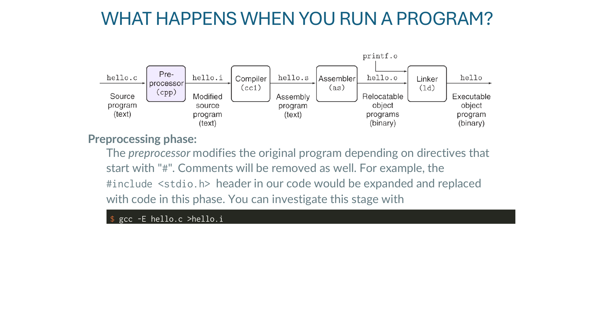
预处理器只做文本替换，处理所有以 # 开头的指令、剥掉注释：
#include <stdio.h> 整个被替换为 stdio.h 的内容（递归展开里面的 #include）。#define 宏被就地展开。#if / #ifdef 条件分支按平台/构建参数选择。// ... 和 /* ... */ 注释被删掉。想看预处理结果：
$ gcc -E hello.c > hello.i这一行把 hello.c 经预处理后的纯文本写到 hello.i。关键点：到这一步还全是 C 代码，只是被"展开 + 清理"过。
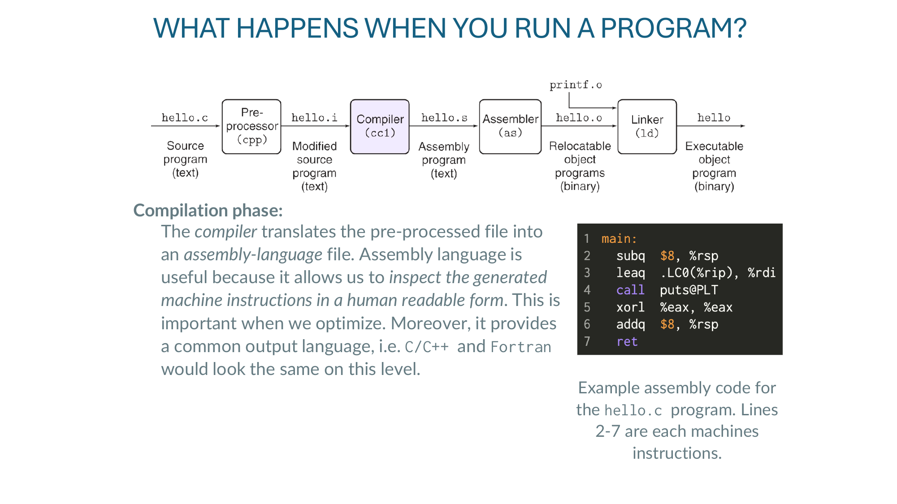
编译器把预处理过的 hello.i 翻成汇编语言（人能读的 CPU 指令文本）。
$ gcc -S hello.i -o hello.s # 只编译到汇编，产物是 hello.s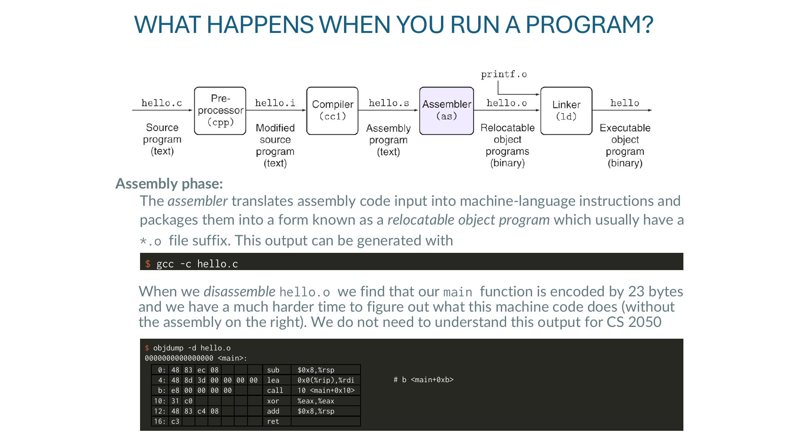
汇编器把 hello.s 的文本汇编翻成真正的二进制机器指令，打包成 relocatable object file（可重定位目标文件，.o）：
$ gcc -c hello.c # 只编译到 .o，产物是 hello.o"Relocatable" 的意思：里面对外部符号（如 printf）的地址还没填上，等链接阶段决定。
对 hello.o 反汇编一下，能看到 main 函数被编码成 23 字节：
$ objdump -d hello.o
0000000000000000 <main>:
0: 48 83 ec 08 sub $0x8,%rsp
4: 48 8d 3d 00 00 00 00 lea 0x0(%rip),%rdi # b <main+0xb>
b: e8 00 00 00 00 call 10 <main+0x10>
10: 31 c0 xor %eax,%eax
12: 48 83 c4 08 add $0x8,%rsp
16: c3 ret逐行说一下（不需要背，了解结构即可）：
sub $0x8,%rsp —— 给栈腾 8 字节空间（函数调用前的对齐）。lea 0x0(%rip),%rdi —— 把 "hello, world!\n" 字符串的地址装到 rdi（第一个参数寄存器）。注意操作数里的 0x0 —— 这是占位符，等链接器把真实地址回填进来。call 10 ... —— 调用 printf。这里的目标地址也是 0 占位，等链接器解析 printf 符号后填上。xor %eax,%eax —— 把返回值寄存器清零（对应 C 里的 return 0，xor reg,reg 是清零的惯用写法，比 mov $0 短）。add $0x8,%rsp —— 还栈。ret —— 从 main 返回。这一步之后，代码已经是机器指令，但有"洞"——下一步链接填洞。
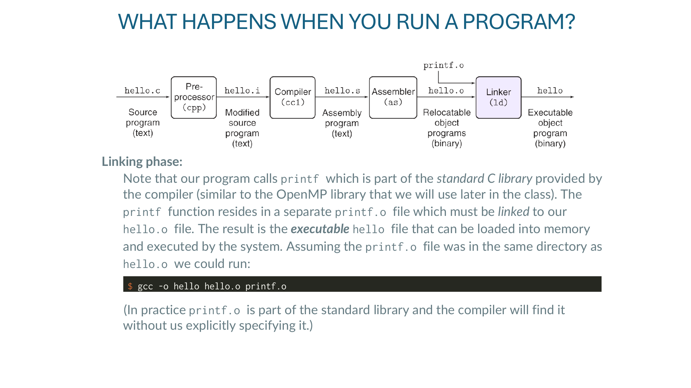
printf 不住在我们的 hello.o 里，它住在 C 标准库提供的 printf.o（实际上是 libc.so 的一部分）里。链接器负责把两个 .o"焊"成一个可执行文件，把上一步那些 0x0 占位真正填成 printf 的最终地址：
$ gcc -o hello hello.o printf.o实际编译我们从来不用显式写 printf.o——它是标准库的一部分，编译器自动找。但原理就是这样。后面课里用 OpenMP / MPI 库的时候，-fopenmp / -lmpi 这些参数就是在告诉编译器"该链哪个库"。
.c → .i）：纯文本展开.i → .s）：C → 汇编.s → .o）：汇编 → 机器指令（带空洞的 object）.o + libs → 可执行）：填洞，合成一个完整二进制./hello 那一瞬间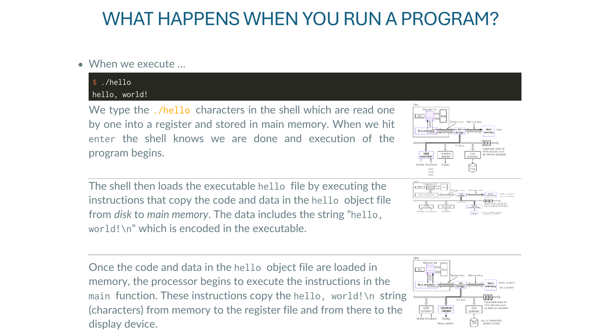
从你敲下 ./hello 到屏幕上出现 hello, world!，背后发生了：
hello 文件的代码段和数据段（含 "hello, world!\n" 字符串）从磁盘搬到 main memory。这就把第一部分接到了第二部分——main memory、register file、PC、bus这些词后面要展开。
讲师的论点：性能 = 算法 + 硬件。"硬件细节会变，但性能原则不变"——所以这一节学的不是 Intel 某代具体怎么连线，而是一切现代 CPU 都有的四类组件：
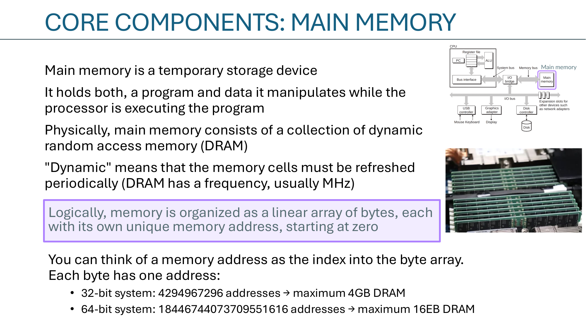
| 操作 | 含义 |
|---|---|
| Load | 把 main memory 里的一个字节/字搬到 register（覆盖原 register 内容） |
| Store | 反过来：把 register 里的值写回 main memory |
| Move | register ↔ register，不碰 main memory |
| Compare | 把 register 和 0（或与另一个 register）比较，结果存进 flag |
真实 ISA 有上百条指令，但本质上都能拆成这四类的组合。
Buses（总线）是连接 CPU、memory、I/O 的电气通道，每次传"一个 word"。
I/O 设备通过 controller（板载芯片）或 adapter（插卡，如 GPU 走 PCIe）接到 I/O bus。它们的角色只是把字节从 I/O 设备搬到 bus 上。
"指令和数据都从同一个 memory 经同一根 bus 进 CPU"——这就是 von Neumann。
由于 CPU 和 memory 分开、之间只有一根 bus，数据搬运速度成为整体性能上限。讲师用一个工厂比喻：
两个量化这个瓶颈的指标：
这两个概念在 slide 74 还会专门展开。
你去图书馆写论文：不会每读一句就跑去书架取一次，而是把一摞当下要用的书搬到桌上，再展开读。书架 = main memory；桌子 = cache。这就是 cache 的全部哲学。
Cache 不是单独的"额外内存"——它是把 main memory 里正被访问的那一小片镜像到更近 / 更快的 SRAM 上。程序员不直接管它（硬件管），但代码写得好不好会决定命中率。
用 lstopo（hwloc 工具集）把机器的"层级"画出来。
读这种图的诀窍：从下往上 = 从快到慢、从私有到共享。L1 私有 → L2 私有 → L3 共享 → DRAM 共享。所有"cache coherence"（缓存一致性）问题的根源就是 L1/L2 私有但数据在共享层得保持一致。
| 层级 | 位置 | 延迟（周期） | 由谁管 |
|---|---|---|---|
| CPU registers | on-chip | 0 | 编译器 |
| L1 cache | on-chip | 4 | 硬件 |
| L2 cache | on-chip | 10 | 硬件 |
| L3 cache | on-chip | 50 | 硬件 |
| Main memory (DRAM) | off-chip | 200 | 硬件 + OS |
| Disk cache | controller | 100,000 | 固件 |
| Browser cache | local disk | 10,000,000 | 浏览器 |
| Web cache | remote server | 1,000,000,000 | web proxy |
关键对比：register vs DRAM 差 200×；DRAM vs disk 差 500×。跨一层就是数量级，所以让访问尽量命中上层是写高性能代码的核心动作。
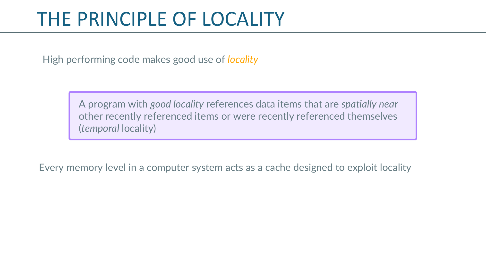
"高性能代码用 locality" —— 两种 locality：
sum。整个 memory hierarchy 都假定了 locality 是真的——cache 一次拉一条 64 B 的 cache line，就是赌"你既然要 v[0]，多半也要 v[1]..v[15]"。
int sum = 0;
for (int i = 0; i < N; ++i) {
sum += v[i];
}sum —— 每次循环都读+写一次，极强 temporal locality（多半被编译器搬进寄存器）。v[i] —— 顺序访问，极强 spatial locality（每条 64 B cache line 装 16 个 int，前 15 次访问都是 cache hit）。// 左：外层 loop，内层 i
for (int loop = 0; loop < 10; ++loop) {
for (int i = 0; i < N; ++i) {
... = ... v[i] ...;
}
}
// 右：外层 i，内层 loop
for (int i = 0; i < N; ++i) {
for (int loop = 0; loop < 10; ++loop) {
... = ... v[i] ...;
}
}右边好：对每个 v[i]，连续 10 次都读它——拿到桌上的"那本书"被反复使用，极强 temporal locality。左边每次扫完整个数组才回头，N 大的话 cache 已经被换走了。
顺序访问 v[0], v[1], v[2], ... 叫 stride-1（或 unit stride）。一条 cache line 一旦载入，后面 15 次几乎免费——是最理想的访问模式。
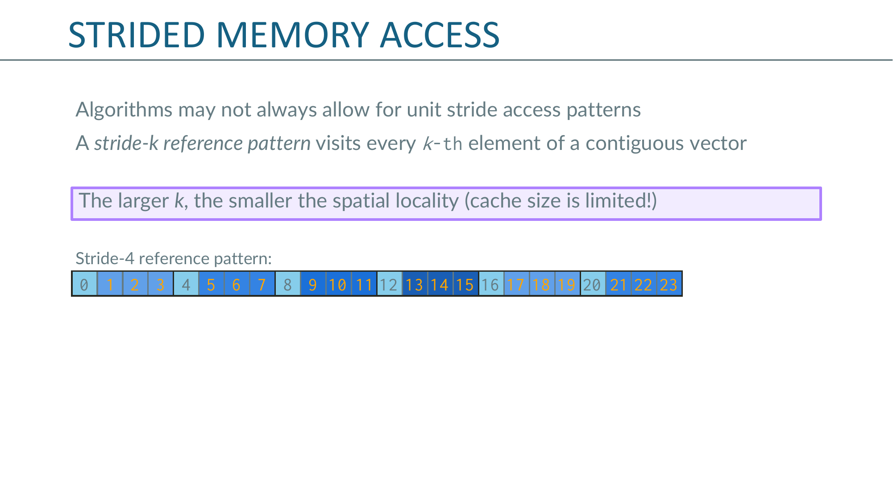
访问每 k 个元素叫 stride-k：访问 v[0], v[k], v[2k], ...
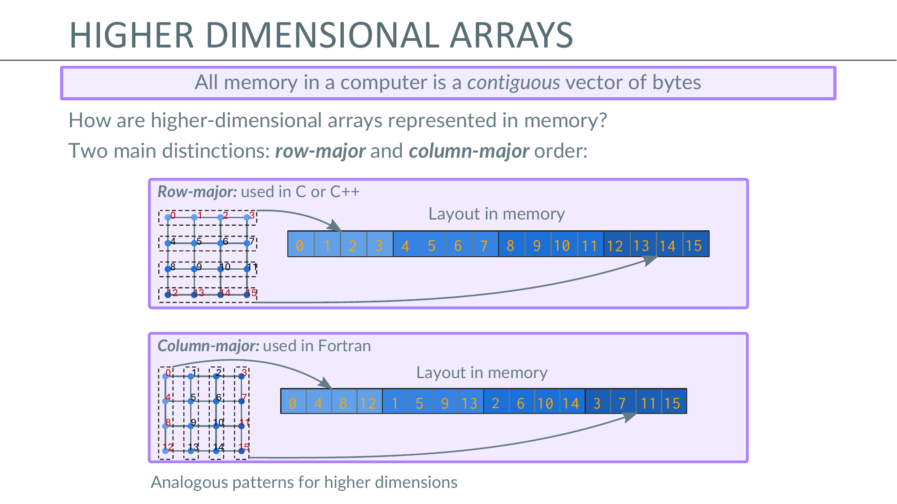
所有 memory 本质上是一维字节数组。二维数组要选一种 linearization：
A[i][j] 在内存里是 A + i*ncols + j。A + j*nrows + i。选哪个不影响正确性，但影响 locality：
for i { for j { A[i][j] } } 是顺序访问（stride-1）。for j { for i { A[i][j] } } 是跨行访问（stride = ncols），cache 灾难。这就是为什么把 BLAS 风格的 column-major 代码直接搬到 C 里跑会慢——访问模式和 cache 布局对不上。
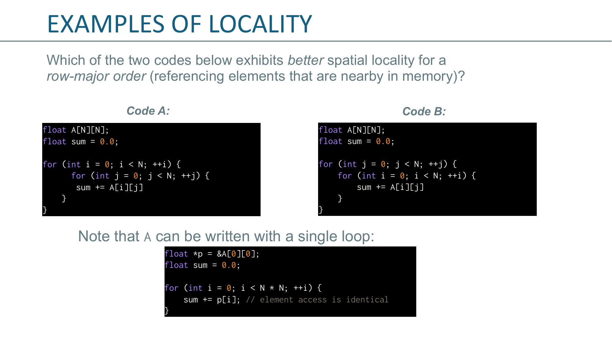
// Code A：行优先（先 i 再 j）
for (int i = 0; i < N; ++i)
for (int j = 0; j < N; ++j)
sum += A[i][j];
// Code B：列优先（先 j 再 i）
for (int j = 0; j < N; ++j)
for (int i = 0; i < N; ++i)
sum += A[i][j];在 row-major 下：
Slide 还给了一个等价的"一维写法"：
float *p = &A[0][0];
float sum = 0.0;
for (int i = 0; i < N * N; ++i)
sum += p[i]; // 完全顺序，stride-1说明 Code A 本质上就是这个——既然是 stride-1，写一层 / 两层循环对硬件没区别。
同一个数学操作，循环顺序换一下，性能可以差几倍。两个实现：
// Implementation 1: i, j, k（"dot-product" 顺序）
for (int i = 0; i < N; ++i)
for (int j = 0; j < N; ++j)
for (int k = 0; k < N; ++k)
C[i][j] += A[i][k] * B[k][j];
// Implementation 2: i, k, j（"行更新" 顺序）
for (int i = 0; i < N; ++i)
for (int k = 0; k < N; ++k)
for (int j = 0; j < N; ++j)
C[i][j] += A[i][k] * B[k][j];| 变量 | Impl 1（ijk） | Impl 2（ikj） |
|---|---|---|
C[i][j] | 对最内层 k 是不变的 → 编译器搬进 register，写一次（很好） | 对最内层 j 在变 → 每次都要 load + store（多了存操作） |
A[i][k] | 对最内层 k 是 row-major 顺序 → 好（stride-1） | 对最内层 j 是不变的 → 搬进 register，最好 |
B[k][j] | 对最内层 k 是 row-major 下 stride-N → 灾难 | 对最内层 j 是 row-major 顺序 → 好（stride-1） |
结论：B 的访问模式决定胜负。Impl 2 在内层走 B 的连续元素（stride-1），cache 利用率高得多。这就是著名的 "ikj 顺序比 ijk 顺序快"——同一个矩阵乘，光换循环顺序就能差 3–10×。
| 术语 | 含义 |
|---|---|
| Cache block / cache line | cache 之间搬运的最小单位，固定大小（64 B 是 Intel/AMD 的标准） |
| Cache hit | 请求的数据在 level k 里找到了 |
| Cache miss | 没找到，必须从 level k+1 拉一整条 cache line 上来；拉上来要踢掉某条已有 line（victim），按 replacement policy（LRU / LFU / random）选谁出局 |
| Hit / miss rate | 命中（或未命中）的比例 |
| Miss penalty | 把 line 从 k+1 搬到 k 所花的时间 |
回到矩阵乘 Impl 1 的 B[k][j]：访问一次 B[k][j] 拉一条 line（含 8 个 double），但下一次 k 增 1 又跳到 B[k+1][j]——是另一条 line。8 个元素只用了 1 个，浪费 87.5% 带宽。这就是 slide 47 强调的"inefficient and wastes a lot of bandwidth"。
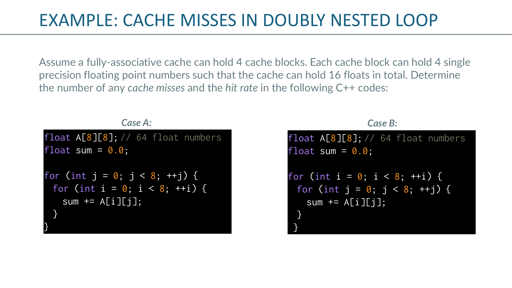
设置一个最小的模型来手算 cache miss：
float A[8][8] = 64 个 float。// Case A：j 在外层
for (int j = 0; j < 8; ++j)
for (int i = 0; i < 8; ++i)
sum += A[i][j];
// Case B：i 在外层
for (int i = 0; i < 8; ++i)
for (int j = 0; j < 8; ++j)
sum += A[i][j];C 是 row-major：内存里依次是 A[0][0], A[0][1], ..., A[0][7], A[1][0], A[1][1], ... 一条 cache block 装 4 个 float，所以每半行是一个 block。
7 张 slide 把 j 外、i 内的访问一步步动画化。关键节点：
A[0][0]。Cache 空，cold miss。拉进 A[0][0..3] 这条 block。A[1][0]。这不在刚才那条 block 里（block 装的是 A[0] 的前 4 个），miss。拉 A[1][0..3]。A[2][0]，又是新 block，miss。A[0][1]。理论上 A[0][1] 和 A[0][0] 同一条 block，但那条 block 早已被 j=0 后期挤出去了。又是 miss。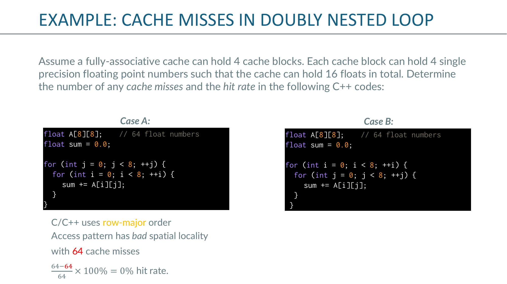
同样手动走一遍，但循环顺序换了：
| Case A（j, i） | Case B（i, j） | |
|---|---|---|
| 访问模式 | stride-8（跨行） | stride-1（顺行） |
| Miss 数 | 64 | 16 |
| Hit rate | 0% | 75% |
同一段代码逻辑，循环顺序换一下，cache 命中率从 0% 飙到 75%。 这就是为什么前面 slide 36 说"aware of cache memories"是这门课最重要的一句。
Single Instruction, Multiple Data —— 一条指令同时对一向量数据做同样的操作。例如：vaddps zmm0, zmm1, zmm2 一条指令把两个 16 维 float 向量逐元素加，写到 zmm0。
ss = scalar single（单精度，1 个 float）sd = scalar double（双精度，1 个 double）ps（packed single）/ pd（packed double）才是真正的 SIMD（多个元素打包在向量寄存器里）。lscpu 看自己 CPU 支持哪一档——这是写 SIMD 代码的第一步。CS 2050 集群是 Skylake Xeon，支持 AVX-512。
三句话讲清"为什么 GPU"：
| CPU core | GPU core |
|---|---|
| "重"核：大 cache、多控制逻辑、低延迟 | "轻"核：小 cache、低时钟、专注算术 |
| 少而强（几十个核） | 多而弱（几千个） |
| 面向 latency | 面向 throughput（需要超大内存带宽喂饱） |
"more transistors dedicated to data processing"——GPU 把大部分晶体管花在 ALU 上，不花在 cache/分支预测上。
| Latency 延迟 | Throughput / Bandwidth 吞吐 | |
|---|---|---|
| 定义 | 等待时间 | 单位时间能完成多少 |
| 单位 | 秒 / 周期 | 每秒多少 / 每秒 GB |
| 取决于工作量？ | 不取决 | 取决 |
| 面向它优化的硬件 | CPU（"运动里的进攻"） | GPU（"运动里的防守"） |
Slide 75 用工厂压机举例：
参数：
两个相似但不一样的术语，常混：
| SIMD | SIMT | |
|---|---|---|
| 名字 | Single Instruction, Multiple Data | Single Instruction, Multiple Threads |
| 程序员视角 | 一条指令，操作向量寄存器 | 写"很多独立线程"，每个 thread 自己的 PC |
| 常见硬件 | CPU 的 SSE / AVX / AVX-512 | NVIDIA GPU（warp = 32 threads 锁步） |
| 本质 | 显式暴露向量硬件 | 把 SIMD 藏在 thread 抽象后面 |
关键洞察：SIMT 的 hardware 其实就是 SIMD。一组 32 个 CUDA thread（一个 warp）实际上在同一条 SIMD pipeline 上锁步执行；只是 CUDA 的编程模型让你假装每个 thread 独立，分支不一致时硬件会 serialize 各分支（branch divergence）。
.i（C 源）；Compile → .s（汇编文本）；Assemble → .o（带未解析符号的机器码）；Link → 可执行（符号全填上）。.c → .i → .s → .o → 可执行。